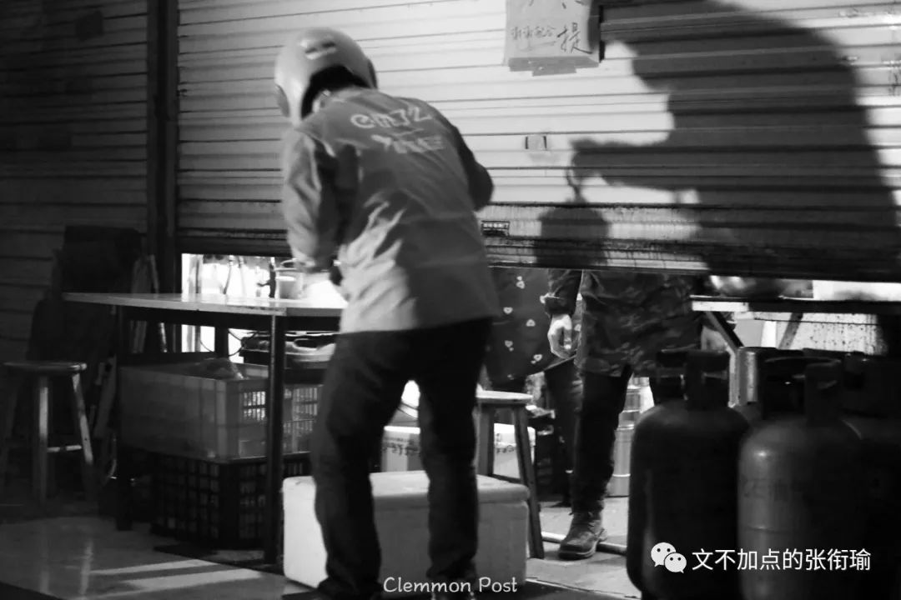
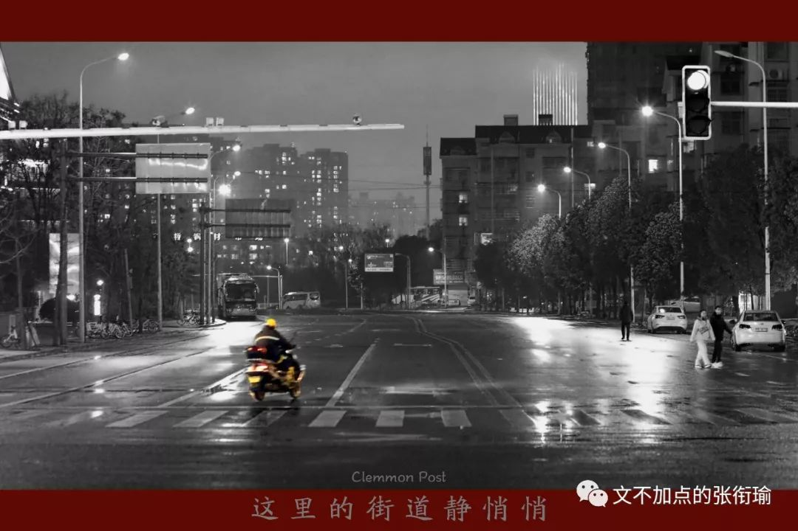
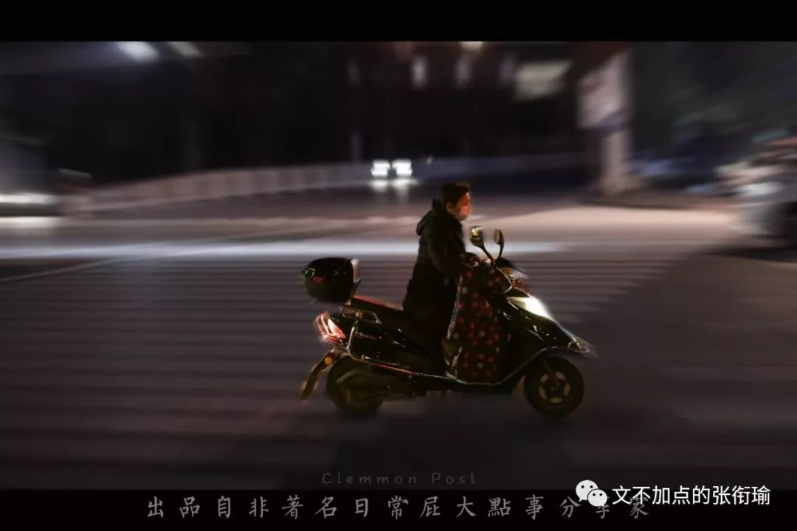
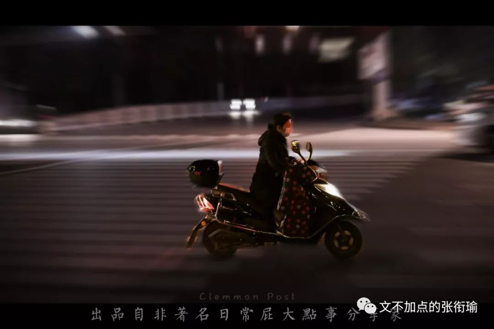
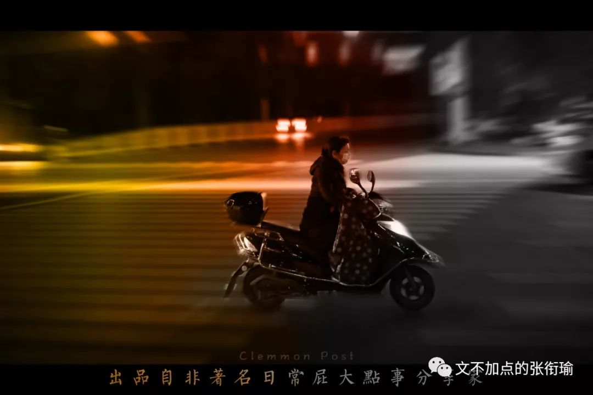
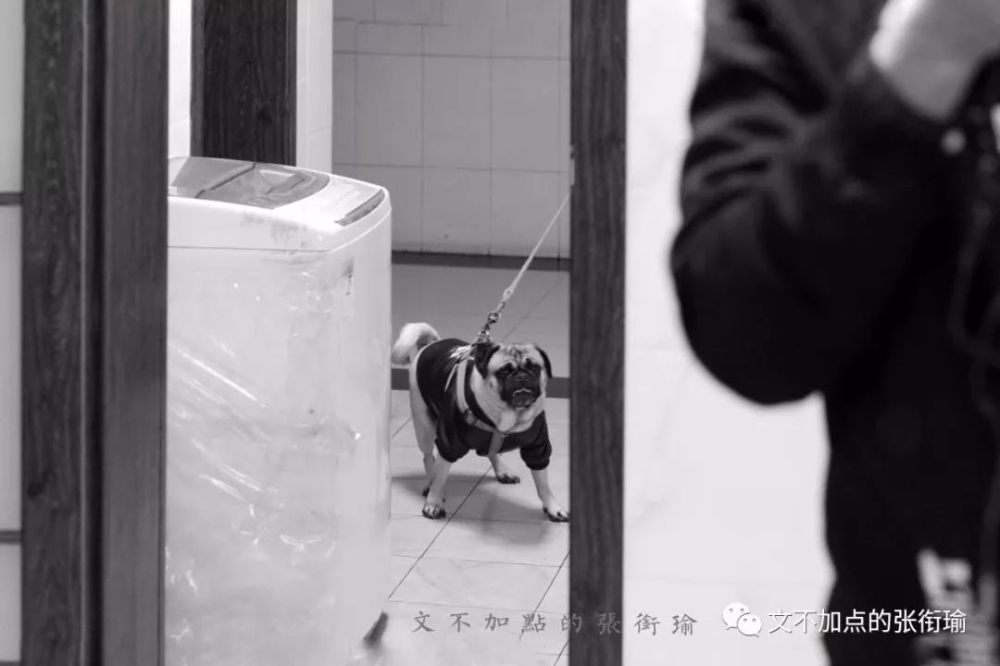
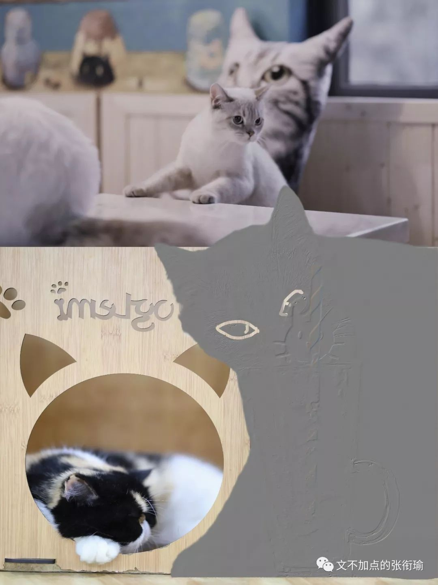
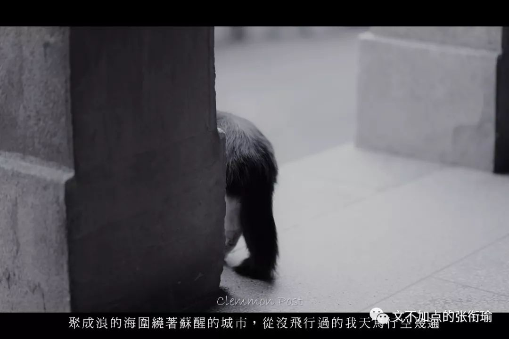

他从这则故事中学到了太多，多的有点过头，以至于陷入了叙事谬误的误区。
早几天朋友在说用冰杯装可乐的时候，我就像闻到了阿斯巴甜。下楼买了两瓶。本来还在琢磨着冰杯这时候能不能送到，看了看价格还好。但是最近没有什么购物、没有要买什么零碎的想法，于是作罢。
和这一心理同时期的，是和人交流念头的降低。票圈里互动的大家都互相变得形式了起来。除了生日气氛下会一定给人凑上之外，其他的倒无往不在下降。随便写点什么倒不管有没有人看，生活也随便地敷衍我一下。
生存需求极简化。有热水、有干净的床褥躺着、不用担心上下顿、不用担心网络某一天中断，偶尔也会觉得这样苦宅的生活可以过到下辈子去。
之前带着相机在外边扫街的时候，两三天用完一节电池算是很中位的使用频率。从二十多天算起，到昨天晚上才用完了一节。也许是电池这几天变得格外经用了也说不定。
立着的煤气罐旁，店主从齐腰高的卷闸门底下，把餐盒递给骑手。拍下这张的时候，电驴的弱光正好把骑手的轮廓又勾勒在了卷闸门上。巧妙的是，一并画出的还有背对着我，无法直接看到的外卖餐盒。讨生活，总在聚光灯后潜藏暗影之下。也正是这些，构成了与我们每个人日常生活最息息相关的模样。
拍下这张的时候，我正出门送生活物资。小哥的电驴拦在路中间，反正也没有什么人车经过。我也没有催他，就从小口袋里掏出相机来拍下这一张。朋友问我为什么不把左边修掉一点。因为现在看着，小哥手上的外餐盒一点也不突出。我试着裁了一下感觉不太行，动辄就会变成狼外婆或者下药的女巫。总之事情应该不应该按照这样的思路。
街道安静，我能拍到的只有外卖小哥和环卫工人。时间还只到晚上八点，三三两两的行人在外边溜达。路上划着明显的直行和转弯示意，而骑手径直对着箭头骑过去。大抵这些约束，是在一定人车流动条件下，公约出来的最宜交通边界，什么样的出行方式该遵循怎样。这里的街道静悄悄。骑手在按照自己的思路飞驰而去。

戴口罩的骑车人。抓这一组有点麻烦，大抵技术不够不能一直对焦命中。废了好多张片子吧，还有一堆从我相向溜走然后我只能望到后脑勺的。瞬时镜头命中还挺难。



自拍的时候感觉有什么东西在看着我。移动镜头了之后发现是一只单身狗看张衔瑜看呆了

试着把以前拍的猫拿出来修一修。其实有点乱玩，我只想组一张海报的来着。把其中一张抠图出来了之后发现边界太过于模糊，而且有点像是生硬地给加到了图像当中。发现细节出不来，只能看到猫的耳朵和脸型。又拿橡皮擦仔仔细细地擦出了两只眼睛。挺好，以后也要玩这种背景上的式样擦除。等一个有具体可以触碰的以后吧。

我记得从前还会熟练地运用在新闻口时期留存下来的技能点，把所有的聊天都可以进行下去。从前看到过分沙雕的东西我也会过去把图偷下来加工或者怎么的玩一玩，现在我会把手机放下、想一想、然后当做没看见。
我要是去上网课教别人填涂答题卡。兴许可以说“连会扔飞镖的猩猩都做得比你好”，虽然其实没有逻辑也没有代入感。
有些人嘴上说前任已经死了，搞不好心里的坟都是粉红色的。
不过看完《熔炉》之后，会真的觉得有些人的生活就是在拌屎下饭。如果仅凭声音大小去做评判。好像没找到什么好的例子。
昨天下午叫醒我的是来消杀的雾炮车。今天下午听声音是来裁剪枝叶的园丁。有点想坐到楼顶去看书，谁让今天长沙这么热太阳又这么好。